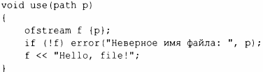

⇐10.9 Ввод-вывод в стиле С 10.11 Советы⇒
10.10. Файловая система
Большинство систем имеют понятие файловой системы, обеспечивающей доступ к информации, перманентно хранящейся в виде файлов. К сожалению, свойства файловых систем и способы манипулирования ими сильно различаются. Чтобы справиться с этим, библиотека файловой системы <filesystem> предлагает единый интерфейс для большинства возможно стей большинства файловых систем. Используя <filesystem>, мы можем переносимо
- выражать пути файловой системы и перемещаться по ней;
- исследовать типы файлов и связанные с ними разрешения.
Библиотека файловой системы может работать с Unicode, но подробное объяснение этой темы выходит за рамки книги. Для получения подробной информации я рекомендую сайт cppreference [13] и документацию Boost для файловой системы [1].
Рассмотрим пример:

Обратите внимание, что программа управления файловой системой обычно выполняется на компьютере вместе с другими программами. Таким образом, содержимое файловой системы между двумя командами может меняться. Например, хотя мы, в первую очередь, проверили, что файл f существует, это может оказаться неверным, когда в следующей строке мы выясняем, является ли f обычным файлом.
path - довольно сложный класс, способный обрабатывать различные наборы символов и соглашения многих операционных систем. В частности, он может обрабатывать имена файлов из командной строки, переданные в main (). Например:
Корректность ра th не проверяется до его использования. И даже тогда его корректность зависит от соглашений системы, в которой работает программа.
Естественно, что ра th можно использовать для открытия файла:
<filesystem> в дополнение к path предлагает типы для обхода каталогов и запросов о свойствах найденных файлов.
Рассмотрим простой, но не такой уж нереальный пример:
Строка может быть неявно преобразована в ра th, поэтому мы можем использовать print_directory следующим образом:
Если бы я хотел перечислить еще и подкаталоги, я написал бы recursive_directory_iterator{р}. Если бы я хотел вывести записи в лексикографическом порядке, я скопировал бы пути ра th в вектор и отсортировал их перед выводом.
Класс ра th предлагает множество распространенных и полезных операций.
Например:
Мы используем раth как строку, из которой можем получить строки с различной информацией (например, расширение f. extension () . string () ).
Обратите внимание, что соглашения об именах, естественные языки и кодировки строк отличаются большой сложностью. Абстракции библиотеки для файловых систем предлагают переносимость и существенное упрощение проблем.
Многие операции имеют перегрузки, которые принимают дополнительные аргументы, такие как разрешения операционных систем. Обработка таковых выходит далеко за рамки данной книги, поэтому вам придется поискать соответствующую информацию, если она вам понадобится, самостоятельно.
Как и сору () , все операции имеют две версии.
- Основная версия, показанная в таблице, например exists (р). Эта функция генерирует исключение filesystem_error в случае неудачи операции.
- Версия с дополнительным аргументом error_code&, например exists (р, е) . Проверяйте значение е, чтобы убедиться в успешности операции или выяснить причины ее неудачи.
Мы используем коды ошибок, когда ожидается, что при обычном использовании операции будут часто неудачны, и генерацию исключений, когда ошибка рассматривается как исключительная ситуация.
Зачастую использование функции с запросом информации - самый простой и прямой подход к изучению свойств файла. Библиотека